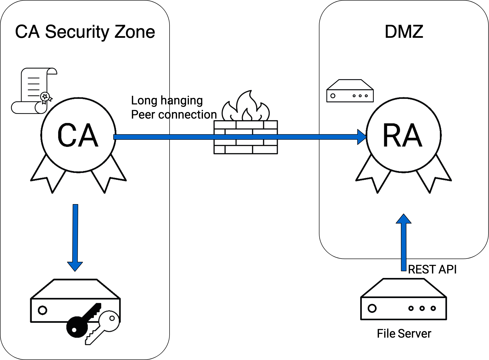
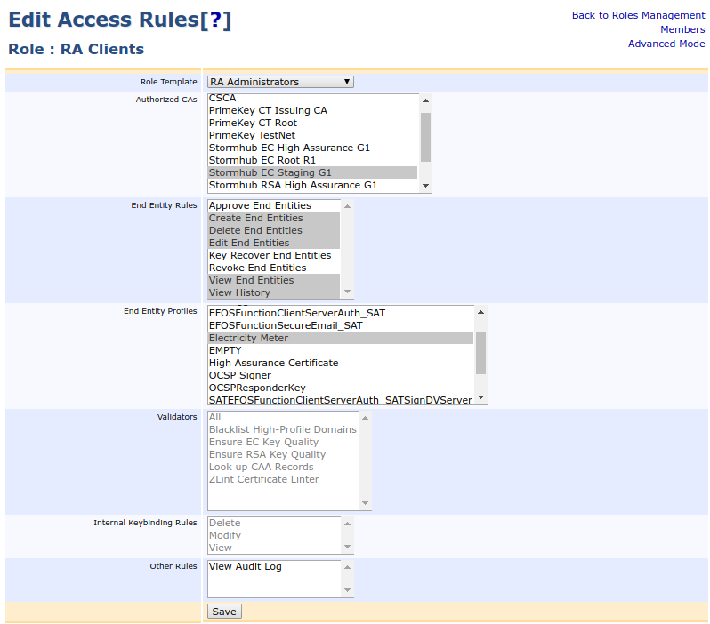
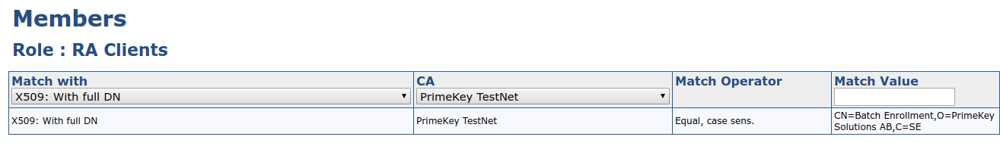
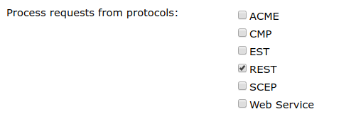
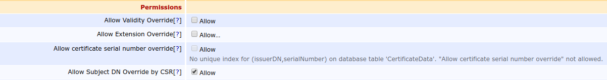
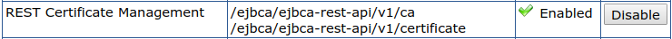

Issue Multiple Certificates at Once Using a Bulk of CSRs
One of the use cases for EJBCA is to create a bulk of certificates, given a bulk of PKCS #10 CSRs. To achieve this, you must integrate with one of EJBCA's APIs for certificate enrollment using a script. This guide uses EJBCA's REST Certificate Management API which allows you to enroll for certificates by sending JSON payloads to EJBCA.
Using this guide, you will learn how to do the following:
Step 1 - Configure CA Instance: Issue an RA client keystore and configure access.
Step 2 - Configure RA Instance: Enable the REST Certificate Management API.
Step 3 - Configure File Server: Create a script for issuing multiple certificates at once using the REST Certificate Management API and set up monitoring of a directory using systemd.
Step 4 - Test Bulk Issuance: Create a PKCS #10 CSR using OpenSSL and test issuance of a certificate to make sure everything is working properly.
Architecture
The recommended setup is shown in the figure below.

This setup consists of the following components:
A hardware security module storing the private key of the CA.
An RA instance running EJBCA, acting as a proxy between the file server and the CA.
A CA instance running EJBCA. The CA is connected to the RA using a peer connector.
A firewall at the perimeter of the CA security zone shielding the CA from the outside world.
A Linux file server storing new CSRs and the certificates to be distributed. The file server makes requests to the RA instance using EJBCA's REST Certificate Management API.
Step 1 - Configure CA Instance
Start by configuring the CA instance according to the following instructions.
Issue RA Client Keystore
You need to issue an RA client keystore to the file server. The keystore is used by the file server to authenticate to the RA instance when doing REST API calls.
Issue the keystore using the following settings:
|
Key usage |
Digital signature |
|
Extended Key Usage |
Client Authentication |
|
Format |
P12 |
Make a note of the subject DN of the certificate, since it is needed in the next step.
Configure RA Client Access
Next, give the RA client certificate access to perform RA functions on the CA. Do this by creating a new role member in EJBCA.
Open the CA Web on the CA instance and click Roles and Access Rules.
Click Add to add a new role.
Edit the access rules for the newly created role:
Use RA Administrators as role template, select the appropriate CA and end entity profile.
Clear Approve End Entities, Key Recover End Entities and Revoke End Entities.
Clear View Audit Log.

Go to Advanced Mode and set /administrator to allow.
Add a new role member to this role using the subject DN of the certificate you created in the previous step.

Allow REST API Calls Over Peers
Next, configure the role for the peer connector to allow processing of REST API calls.
Click Peer Systems on the menu.
Click Authorized requests for the peer connector connected to the RA.
Ensure that access to the appropriate CA and end entity profile is enabled.
In the Process requests from protocols section, enable REST.

Click Roles and Access Rules on the menu and edit the access rules for the peer connector role used by the RA instance, in advanced mode. Set the access rule /administrator to allow.
Configure Certificate Profile
The only way to provide a subject DN when submitting CSRs using the REST Certificate Management API is to include this information in the CSR. However, apart from the public key, information in the CSR is ignored by default. To use the subject DN of the CSR in the certificate, you need to enable Allow Subject DN Override by CSR in the certificate profile.
Click Certificate Profiles on the menu.
Edit the appropriate certificate profile and enable Allow Subject DN Override by CSR in the Permissions section.

Step 2 - Configure RA Instance
Once the CA instance has been configured, configure the RA instance according to the following instructions.
Enable the REST Certificate Management API
The REST Certificate Management API is disabled by default but can be enabled in the system configuration.
Go to the CA Web on the RA instance and click System Configuration on the menu.
Click the tab Protocol Configuration.
Enable REST Certificate Management.

Step 3 - Configure File Server
Finally, create the necessary scripts on the file server to do the bulk enrollment.
Install Dependencies
The following instructions use cURL to do the REST API call, and jq to create JSON payloads.
On Debian based distributions, these packages may be installed directly using apt.
apt install curl jqIf you are using RHEL 8, you must add the EPEL repository to get access to the jq package.
dnf install https://dl.fedoraproject.org/pub/epel/epel-release-latest-8.noarch.rpmyum install curl jqCreate Necessary Directories
Create the following folder structure:
/opt/ejbca-ra-plug/├── certificates├── csr├── failedThe certificates folder will contain any issued certificates and the csr folder will contain CSRs to be sent to the CA. Once a CSR is processed, it is either removed if the corresponding certificate was issued correctly, or put in the failed folder if the certificate could not be issued for some reason.
Transfer Keystore to File Server
Transfer the keystore keystore.p12 you issued previously and place it in the /opt/ejbca-ra-plug directory.
Create Script for Bulk Issuance
To create the script for the bulk issuance, do the following:
Create the following script:
/opt/ejbca-ra-plug/ra.sh#!/bin/shhostname=port=client_cert="/opt/ejbca-ra-plug/keystore.p12:foo123"cert_profile_name=ee_profile_name=ca_name=while["$(ls -A /opt/ejbca-ra-plug/csr)"];doforfilein/opt/ejbca-ra-plug/csr/*.csr;do[ -e"$file"] ||continue# Use the CN in the CSR as the username of the end entityusername=$(openssl req -in${file} -inform PEM -noout -subject -nameopt multiline |sed-n's/ *commonName *= //p')password="foo123"csr=$(cat${file})template='{"certificate_request":$csr, "certificate_profile_name":$cp, "end_entity_profile_name":$eep, "certificate_authority_name":$ca, "username":$ee, "password":$password}'json_payload=$(jq -n \--arg csr"$csr"\--argcp"$cert_profile_name"\--arg eep"$ee_profile_name"\--arg ca"$ca_name"\--arg ee"$username"\--arg password"$password"\"$template")http_code=$(curl -X POST -s \-o'/tmp/response.json'\-w'%{http_code}'\--cert-typeP12 \--cert"$client_cert"\-H'Content-Type: application/json'\--data"$json_payload"\"https://$hostname:$port/ejbca/ejbca-rest-api/v1/certificate/pkcs10enroll")exit_code="$?"if["$exit_code"-ne0 ];thenlogger"Failed to issue certificate for '$username'. cURL exited with exit code $exit_code."mv"$file"/opt/ejbca-ra-plug/failed/continuefiresponse=$(cat'/tmp/response.json')if["$http_code"-ne'201'];thenlogger"Failed to issue certificate for '$username'. Server returned HTTP status code $http_code."logger"Response from server: $response"mv"$file"/opt/ejbca-ra-plug/failed/continueficertificate=$(cat'/tmp/response.json'| jq -r .certificate)if["$certificate"='null'];thenlogger"Failed to issue certificate for '$username'. No certificate found in response."logger"Response from server: $response"mv"$file"/opt/ejbca-ra-plug/failed/continuefifilename=$(basename"$file".csr)echo'-----BEGIN CERTIFICATE-----'>"/opt/ejbca-ra-plug/certificates/$filename.pem"echo"$certificate">>"/opt/ejbca-ra-plug/certificates/$filename.pem"echo'-----END CERTIFICATE-----'>>"/opt/ejbca-ra-plug/certificates/$filename.pem"rm"$file"logger"Succesfully issued certificate for '$username'."donedone⏎Set the hostname, the port, the password of the keystore, the name of the end entity and certificate profile, and the name of the CA signing the certificate.
Ensure the file is executable and only readable by root.
Set permissions for ra.shchmod700/opt/ejbca-ra-plug/ra.sh
Set Up Monitoring using Systemd
Next, set up monitoring of the CSR directory in order to issue a new certificate automatically every time you drop a CSR in the/opt/ejbca-ra-plug/csr directory.
To monitor the directory using systemd, do the following:
Create the systemd monitoring script.
/etc/systemd/system/ra.path[Unit]Description=EJBCA RA Plug[Path]DirectoryNotEmpty=/opt/ejbca-ra-plug/csr[Install]WantedBy=multi-user.targetCreate the systemd service file.
/etc/systemd/system/ra.service[Unit]Description=EJBCA RA Service[Install]WantedBy=multi-user.target[Service]Type=oneshotExecStart=/opt/ejbca-ra-plug/ra.shStart monitoring.
systemctl daemon-reloadsystemctl enable ra.path --now
Step 4 - Test Bulk Issuance
To test the bulk issuance, do the following:
To test your script, create a key and CSR using OpenSSL.
Create a CSR using OpenSSLopenssl req -nodes -newkey rsa:2048 -keyouttest.key -outtest.csr -subj"/C=SE/O=PrimeKey Solutions AB/CN=Bulk Issuance Test"Move the CSR to the /opt/ejbca-ra-plug/csr directory.
Move the CSRmvtest.csr/opt/ejbca-ra-plug/csr/The certificate should now be available in the /opt/ejbca-ra-plug/certificates directory.
Troubleshooting
Check the Syslog
Errors are written to syslog.
> journalctl -xe-- Unit ra.service has begun starting up.Nov 23 20:43:04 rhel8 root[2657]: Failed to issue certificate for 'Bulk Issuance Test'. cURL exited with exit code 60.Nov 23 20:43:04 rhel8 systemd[1]: Started EJBCA RA Service.-- Subject: Unit ra.service has finished start-up-- Defined-By: systemd-- Support: https://access.redhat.com/support-- -- Unit ra.service has finished starting up.In this example, cURL failed with exit code 60, which means that the TLS server certificate of the RA instance is untrusted. If you encounter this problem, import the issuer into the file server's truststore.
Enable Verbose Logging in cURL
You can run cURL with-v for more verbose logging.
Use PEM Files Instead of PKCS #12
Some older versions of cURL do not support PKCS #12 files. In that case, you may split the PKCS #12 file into a client certificate, CA certificate and private key.
openssl pkcs12 -in /opt/ejbca-ra-plug/keystore.p12 -out /opt/ejbca-ra-plug/ca.pem -cacerts -nokeysopenssl pkcs12 -in /opt/ejbca-ra-plug/keystore.p12 -out /opt/ejbca-ra-plug/cert.pem -clcerts -nokeysopenssl pkcs12 -in /opt/ejbca-ra-plug/keystore.p12 -out /opt/ejbca-ra-plug/key.pem.tmp -nocertsopenssl pkcs8 -in /opt/ejbca-ra-plug/key.pem.tmp -out /opt/ejbca-ra-plug/key.pemrm -f /opt/ejbca-ra-plug/key.pem.tmpThen specify these files when you run cURL:
pem_password=curl -X POST -s \ -o '/tmp/response.json' \ -w '%{http_code}' \ --cacert '/opt/ejbca-ra-plug/ca.pem' \ --key '/opt/ejbca-ra-plug/key.pem' \ --cert "/opt/ejbca-ra-plug/cert.pem:$pem_password" \ -H 'Content-Type: application/json' \ --data "$json_payload" \ "https://$hostname/ejbca/ejbca-rest-api/v1/certificate/pkcs10enroll